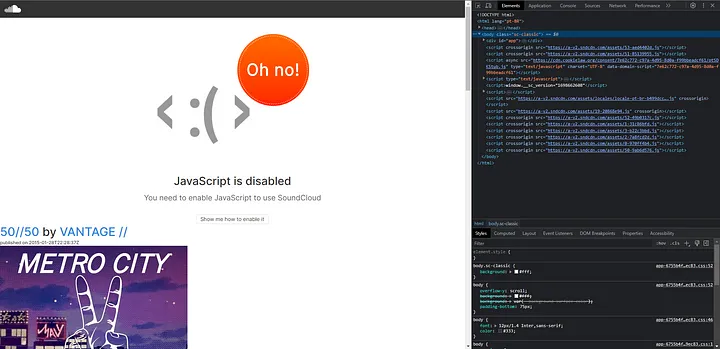
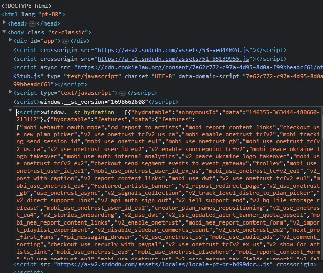
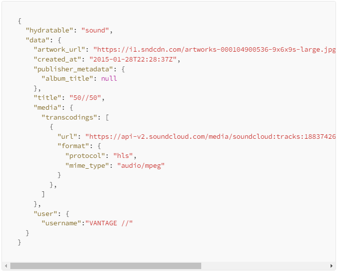
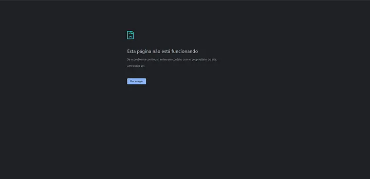
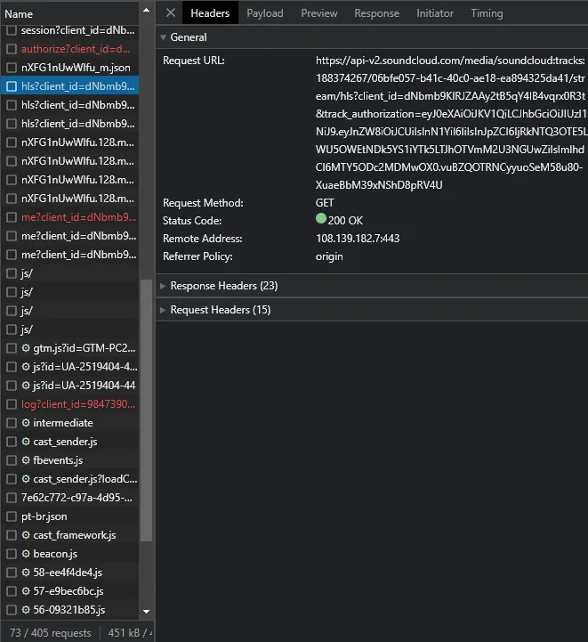

Antes de começarmos a criar nosso scraper devemos entender como o website alvo funciona, no caso do SoundCloud, precisamos saber da onde ele retira os dados de uma determinada música, playlist ou usuário.
Inspecionar Elemento
Se você conhece a internet sabe que muitas pessoas editam conteúdos como posts em redes sociais, títulos de videos no YouTube, e até notícias de jornais. Tudo isso possível através do inspecionar elemento, que permite a edição do HTML da página, mas, não é só pra isso que ele serve, ele também pode rastrear carregamentos externos e requisições AJAX de um website. Ao entrar em um website e pressionar F12, você verá uma janela com diversas informações sobre um website.
Inspecionar Elemento Aberto Na Página Inicial do SoundCloud
Dentro do inspecionar elemento temos diversas abas, no caso do web scraping as duas mais importantes são elementos e network. A primeira nos permite obter informações sobre o HTML, como classes, id e outras tags. A segunda nos permite obter informações sobre as requisições feitas pelo website, incluindo os headers e outras informações adicionais. Com isso podemos simular a mesma requisição e então obter o mesmo tipo de dado que o website oficial obteve.
Investigando Uma Música
Agora iremos usar do inspecionar elemento para investigar informações sobre uma música, mas antes de tudo precisamos saber quais informações são do HTML nativo, e quais são dinamicamente atualizadas por AJAX. Para isso iremos desativar o Javascript nas configurações de websites.

Página De Uma Música Do SoundCloud Após Desativar O Javascript.
Como esperado a página quebra, sem o Javascript o SoundCloud não consegue streamar a música para o usuário, entretanto temos muitas informações sobre a música entre no HTML, temos o título, criador, capa e até data de publicação, essas informações são relevantes pois iremos usá-las nos metadados da música depois que baixarmos ela.
Se observarmos no inspecionar elemento veremos uma tag script que possui todas as informações da música na página.

Tag Script Com Informações Sobre A Música
Como podemos ver existe bastante informação nessa tag, mas, se observamos com cuidado, podemos perceber que isto é uma variável com um array de objetos JSON. Para simplificar só precisaremos do ultimo JSON no array, nele obtemos todas informações necessárias sobre a música.

Acima você vê os dados da música simplificado, esses dados serão usados para baixar a música e inserir metadados, alguns dados podem não existir em todas as músicas então devemos sempre testar nosso projeto para saber se ele está funcionando corretamente. Uma atenção extra para a propriedade “media”, nela podemos ver o “transcodings” da nossa música, no próximo artigo iremos explorar sobre o protocolo HLS que o SoundCloud utiliza no streaming de música. Antes de terminar vamos acessar o url dos “transcodings”.

O link que estamos tentando acessar é da API do SoundCloud, e para usar a API precisamos de uma autorização, infelizmente na data deste artigo o SoundCloud não está aceitando pedidos de acesso para sua API. Com isso devemos procurar outra forma de acessar este link, para isso vamos usar a aba network do inspecionar elemento.

Aqui podemos ver uma chamada pro mesmo link que acabamos de acessar, nesse caso a chamada foi feita pelo próprio website. Se olharmos com atenção veremos mais informações no link, o link completo possui um client_id e um track_authorization, mas, só precisamos do client_id para acessar o link. Agora vamos acessar o link denovo só que adicionando o client_id.
Agora obtivemos um objeto JSON com outro link, bem por enquanto é só isso no próximo artigo veremos sobre HLS e streaming.